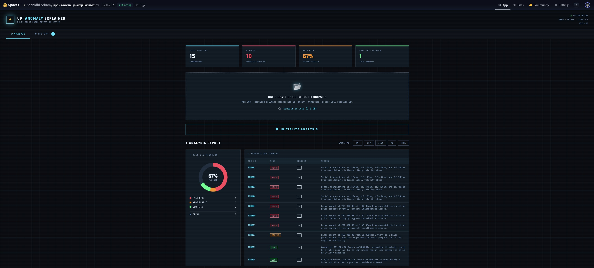
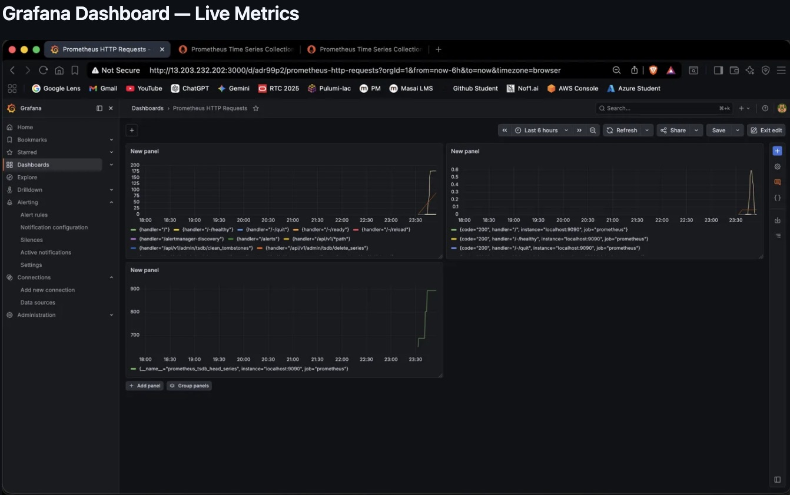
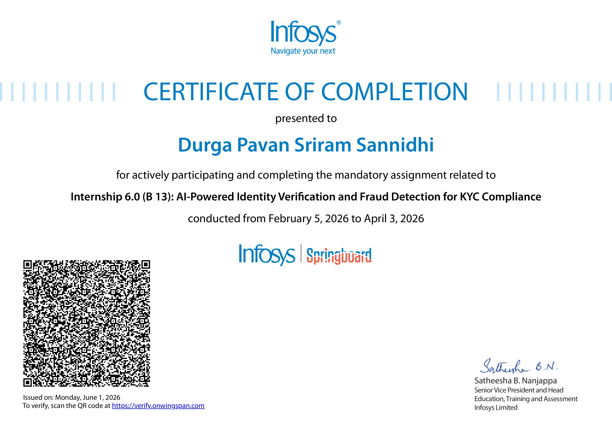

Sannidhi Sriram
Cloud & AI
Engineer
Building resilient infrastructure
and intelligent automation systems
at the edge of cloud & AI.
"I build things
that scale
and survive."
B.Tech Computer Science student at Lovely Professional University (CGPA 7.14, Minor: Cloud Computing), graduating May 2027. Hands-on experience in cloud-native development, AI/ML pipelines, and DevOps engineering.
I've shipped production-grade microservices, multi-agent AI systems, and observability stacks on AWS and Azure — bridging the gap between infrastructure and intelligent software.
Cloud
Infrastructure & CI/CD
AI & LLMs
Languages
Observability & Data
Projects

UPI Transaction Anomaly Explainer
Three-agent CrewAI pipeline: Analyst (HIGH/MEDIUM/LOW), Explainer (plain-English summaries), Red Team (CONFIRM/DOWNGRADE/DISMISS). Rule-based heuristics pre-filter velocity spikes, amount anomalies, and odd-hour transactions before LLM invocation — cutting Groq API calls to stay within free-tier. Dockerised and deployed live on Hugging Face Spaces.

Observability Fargate
Containerised Prometheus + Grafana on ECS Fargate (zero EC2) provisioned entirely via Terraform — custom linux/amd64 Prometheus image pushed to ECR, scraping live metrics in real time. Grafana alert rule evaluates PromQL every 1 min, simulating SRE incident detection. Full VPC, 2-AZ subnets, security groups, and least-privilege IAM via Terraform.

AI-Powered KYC Compliance System
BFSI-sector AWS KYC system: evaluated SageMaker and Lambda before selecting EC2; three document-specific TFLite CNN classifiers (Aadhaar, PAN, Passport) + PyTorch GNN document classifier. Groq API and EasyOCR for field extraction; results persisted in MongoDB Atlas, surfaced via React/Vite frontend on S3. Built at Infosys Springboard.
AI Test Generator — Automated QA
FastAPI microservice converts Python source to executable pytest suites via Groq LLaMA 3.1 — rate-limited (5 req/min), input-validated; achieves 87% self-coverage. Jenkins enforces 70% coverage gate; passing builds produce immutably tagged images (BUILD_NUMBER-COMMIT_SHA), push to AWS ECR, update GitOps repo — ArgoCD auto-syncs Helm release to Minikube. Zero manual steps commit-to-pod.

Self-Healing Microservice on AWS
Four-layer fault recovery on AWS: Spring Boot /actuator/health signals liveness; container health checks auto-restart on failure; ALB isolates unhealthy instances within 30s; ASG (min 2, max 4) terminates and replaces failed EC2s — zero manual intervention. Full AWS stack (VPC, multi-AZ ALB, ASG, IAM) via Terraform; GitHub Actions runs Snyk SAST/SCA on every push — high-severity findings block Docker push to ECR.

AI Patient Triage — Azure
Flask app on Azure App Service integrating Azure OpenAI for real-time symptom triage — classifies as Urgent Care, Non-Urgent, or Self Care; returns priority, reasoning, and recommended action as structured JSON with no secrets hardcoded. Every request and LLM response logged to Azure Table Storage for full auditability; monitored via Azure Monitor.
AI Intern — Cloud Deployment Lead
Infosys Springboard · BFSI · Remote- Led AWS deployment of an AI-powered KYC system — TFLite CNN for document classification (Aadhaar, PAN, Passport) and PyTorch GNN fraud scorer with anomaly threshold 2.0 separating Approved from Suspicious verdicts.
- Integrated Groq API and EasyOCR for structured field extraction; results persisted in MongoDB Atlas and surfaced via React/Vite frontend on S3; resolved 14 tracked defects across Python, Node.js, and schema boundaries.
- Managed the GitHub repository and coordinated delivery across a 15-member team spanning AI/ML, web development, and deployment to keep the main branch stable.

Oracle Race to Certification 2025
Ranked Top 500 Globally · Oct 2025
Certifications


B.Tech Computer Science
Lovely Professional University · Minor: Cloud ComputingIntermediate — Class XII
Keshav Smarak Jr. CollegeSecondary — Class X
Oxford Grammar SchoolLet's build
something grand.
Open to full-time SRE, Cloud & AI Engineering roles.